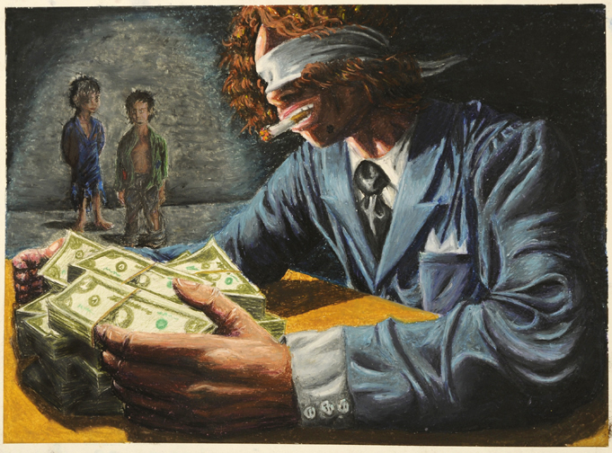
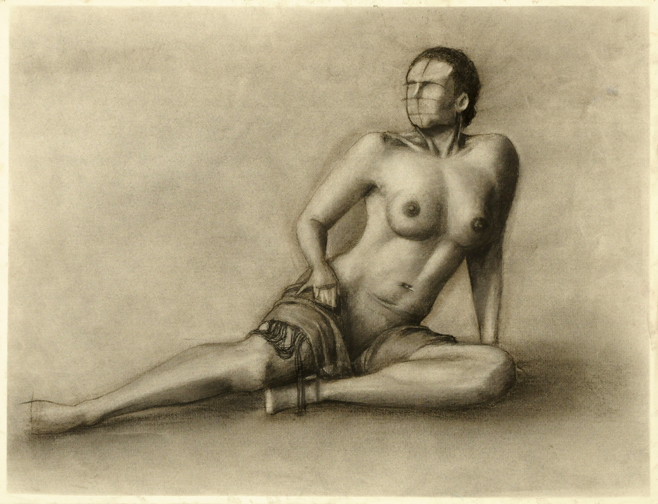

Buddha on Red Berries
In this piece I used Adobe Photoshop and Adobe Lightroom. I took a photo of a small Buddha statue I had laying around, and combined it with other photos of red berries I took around campus. I collaged 5 different photos of the berries in order to get a big bundel of berries for the statue to sit on. Then I added some custom brushes with a water splash effect.

Buddha on Blue Berries
This piece had a similar process as the Buddha on Red Berries, except I used a second statue in a black color. Here I collaged a different set of berries. I also used a custom brush with a smokey effect, as well as the other water splash brush. Since, this statue was black I decided to change the hue on the berries to blue.

A Buddha on Smokey Berries
Of the three Buddha pieces I made this is perhaps my favorite one. In comparison, it is more dynamic with it's 3/4 angle, the smokey effect is more imposing and elegant, and it also has some movement that can be read as though the Buddha is floating from right to left.

Florence Villa on an Egg
This is one of my favorite pieces. It just has that "why?" factor. No one asked me to put a villa on an egg but I did and it looks great. I had a lot of fun making this one and it was actually very easy to make. There was really no plan here other than playing with perspective and lighting. It was tricky to get the shot of the egg, even had to make a small stand for the egg so it would sit up straight.

Collage of Cal State East Bay
In contrast to Florence Villa on an Egg, this was my least favorite piece to make. I like how it turned out but the process was painfully tedious. For this piece I frankensteined more than 10 different photos in one. It took forever!, but it was worth it.

Ol' Chevy
I always enjoy traditional media a little more than digital, which is why this piece is one of my all-time favorites. For this one I used oil pastels. The idea behind this piece was the concept of Earth after humans and how nature would take over any man-made objects, in this case an old Chevrolet pick-up.

Dwayne the "Bird" Johnson
Dwayne the Bird Johnson is another piece with a "why?" factor to it. I did this one out of pure fun. There used to be a trend where people would phototshop arms on birds and it was just too great not to try it. Then this came out...I regret nothing.

Dark Sam
Here's another of my favorite pieces, maybe even my favorite in general. The idea was to turn my friend Sam into a monster or some mythical creature. I mainly focused on lighting because I wanted to convey a surreal and dark tone in the piece. Because of this way the piece fells grim but not gothic.

After Party

Be Left Alone

Bird of Paradise

Birds in the Kitchen
Blinded by Money Greed
Charcoal Figure

Computer

Contemplating Suicide

Curious Jungle Citizen

Diminished

Dog and God

Eiffel Tower
Headline
This is a short video I made in Final Cut Pro. The idea behind it was to make a headline for an article. The article was about how videogames are rising into a bigger industry than it was in the 80's and 90's. Based on the videogame theme I pulled some of my favorite videogame characters and made them part of the headline